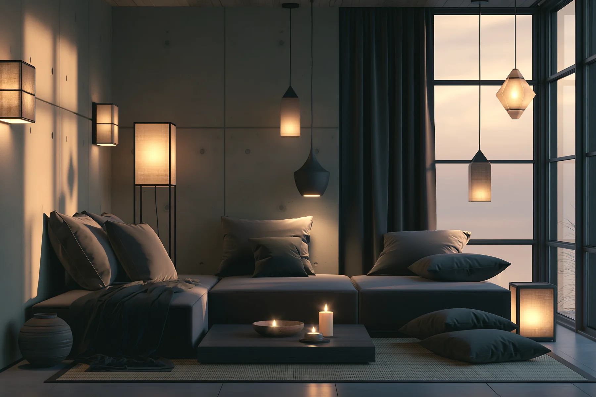
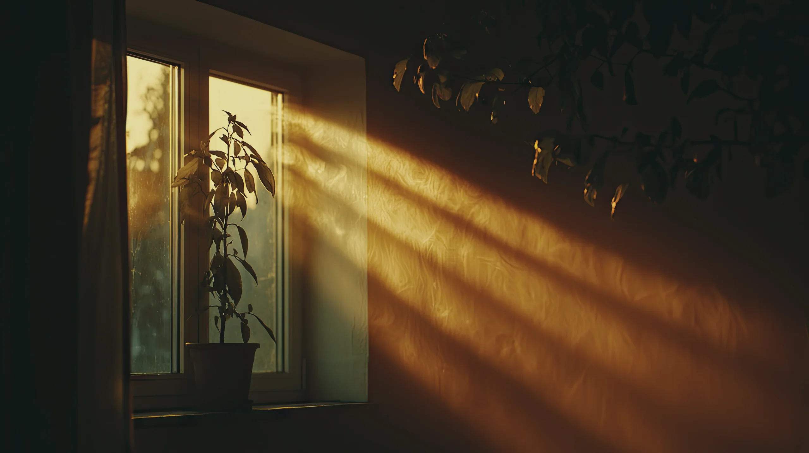
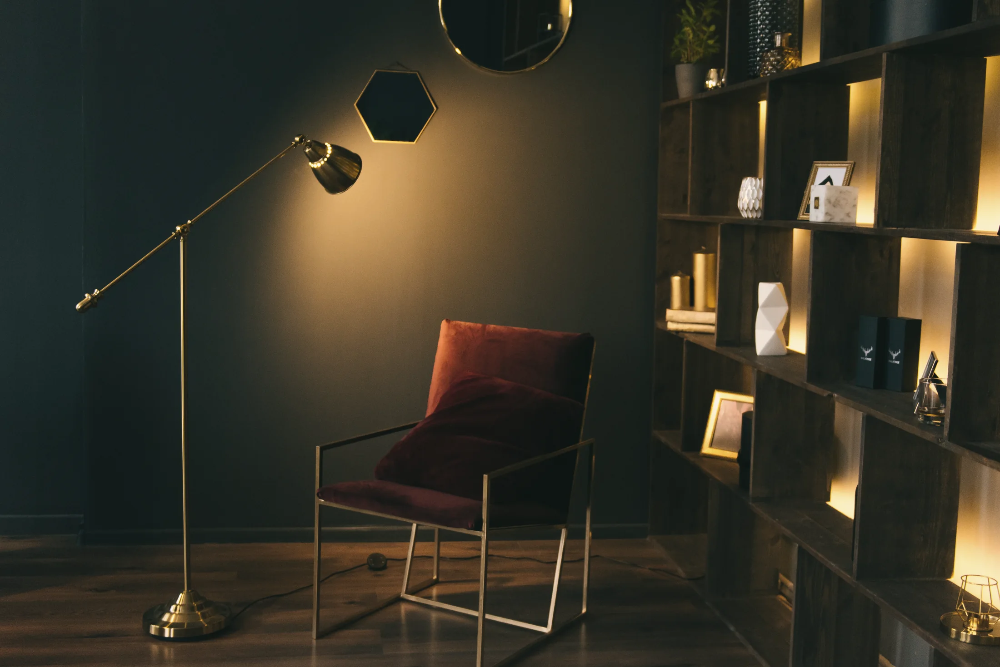
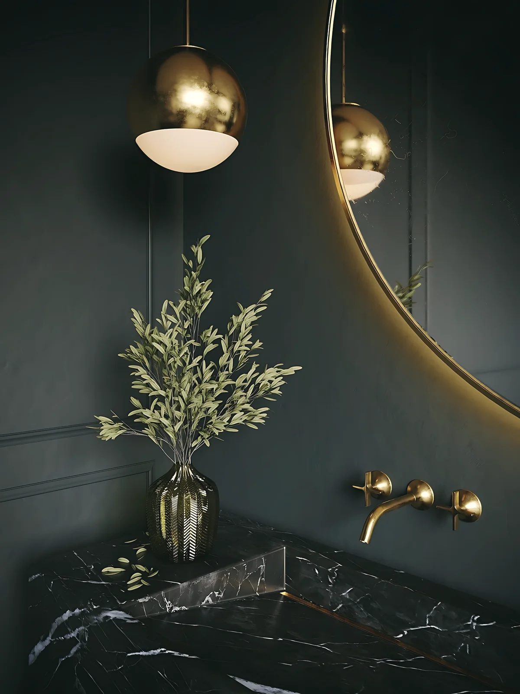
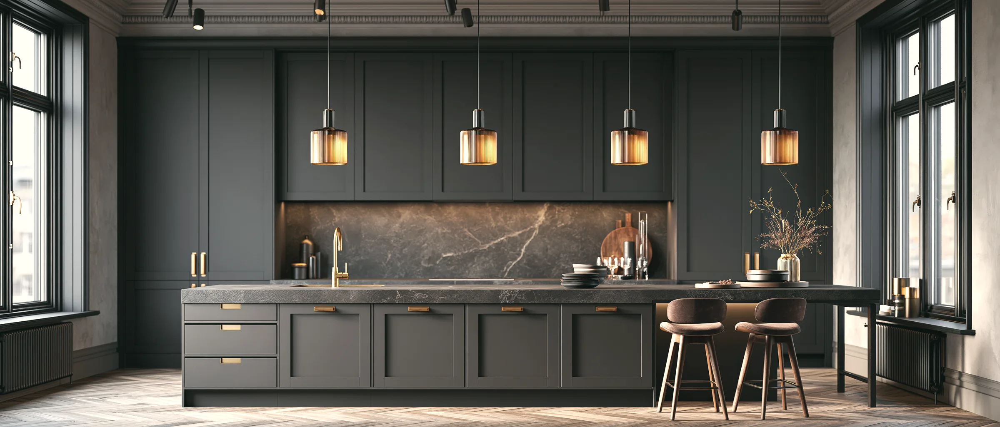

01
השקט של המינימליזם העריכתי, בלילה. קרקע ירוקה-שחורה עם גרעין, שנהב, ואור במקום צבע: מי שמוצג כאן הוא אתר של סטודיו לאדריכלות פנים, עם צילום אמיתי, הירו שנמס לקרקע, ותמונה אחת שהאור שלה נדלק איפה שמסבירים.
מתי משתמשים: עורכי דין, פיננסים, ביטחון ומיגון, אדריכלות ועיצוב פנים, נדל"ן יוקרתי, טכנולוגיה פרימיום, ואתרי סטודיו עם צילום חזק. כל מי שמוכר סמכות, שקט ואור ולא חום.
כל שפה פעילה היא עמוד ייחוס אמיתי של עסק שמתאים לה, עם תמונות, קופי ומהלך חתימה משלו, ונבדקה מול רף הסטודיו. העסק והתמונות הם דוגמה; בפרויקט לוקחים מהשפה את המתכון, מפת היישום והחתימה, וטובעים מהם עור מלא למותג. שפה בארכיון עדיין מוצגת על השלד המשותף הישן, ולא מוצעת בשאלון.

אנחנו מתכננים בתים פרטיים ודירות גג בתל אביב ובשרון. כל פרויקט מתחיל בשאלה באיזו שעה משתמשים בכל חדר, והאור נגזר מהתשובה.
בתמונה
בוחרים נקודה בתמונה, והאור נדלק איפה שמסבירים.
המנורה עומדת מאחורי הכורסה, וראש המנורה מופנה אל הקיר. האור חוזר אל החדר רך וחם, והעיניים לא נתקלות בנורה.
בכל תא במדף יושב פס אור חם ב-2700 קלווין. החפצים נראים, והמדף עצמו מאיר את החדר בלי עוד מנורה.
הקיר ירוק עמוק ומט, והכורסה בורדו שחוק. זה כתם הצבע היחיד בחדר, ולכן העין נחה עליו. את הגוונים בחרנו על הקיר עצמו, בשלוש שעות ביום.

הבאנו רשימה של חדרים, והסטודיו שאל באיזו שעה כל אחד מהם נמצא בשימוש. מאז בנינו הכול סביב השעות האלה.

אנחנו מציגים רק בתים שנמסרו, ושהדיירים הסכימו שנצלם.
לכל הפרויקטים

ביקור של חצי יום בבית או בדירה שכבר בנויים, ותוכנית כתובה: איפה יושבים בכל שעה, ואיזה אור צריך בכל מקום.
2,400 ₪
תכנון פנים ותאורה, נגרות בהתאמה אישית ופיקוח על הביצוע עד המסירה.
38,000 ₪
שותף בשטח לאורך הבנייה: ביקורי אתר, בקרת קבלנים ובחירת חומרים מול הדוגמה.
1,800 ₪
משאירים פרטים, ואחד השותפים חוזר אליכם עד סוף יום העבודה. בשיחה נבין מה בונים ואם יש בינינו התאמה. בלי עלות ובלי התחייבות.
אחד השותפים יחזור אליכם עד סוף יום העבודה, למספר שהשארתם.
הקוד כאן עומד בפני עצמו. כל טוקן עיצוב נושא ברירת מחדל, מחלקות העזר של המאגר מוטמעות בו, ותגי הסקריפט מסודרים לפי הסדר הנכון. פרויקט שמגדיר --accent או --line משלו יורש אותם אוטומטית. הרכיב הזה מסתמך על dir="rtl".
/* S13 · כהה יוקרתי */
/* Google Sans בגודל האמיתי שלו, מקומי. בפרויקט מוחקים את השורה הזו וטוענים Google Sans כרגיל (library/fonts.md). */
@font-face{font-family:"MV Google Sans";src:url("https://liavwebdesign-spec.github.io/motion-vault/assets/fonts/google-sans.woff2") format("woff2");font-weight:400 700;font-display:swap}
/* עמדת האור בתמונת החתימה: משתנים רשומים, כדי שהאור ינוע בין הנקודות במקום לקפוץ */
@property --lx{syntax:"<percentage>";inherits:false;initial-value:30%}
@property --ly{syntax:"<percentage>";inherits:false;initial-value:22%}
@property --lr{syntax:"<number>";inherits:false;initial-value:1}
.cwrap{container-type:inline-size}
.q{--bg:#0C100F;--ink:#EEE9DE;--ink-soft:rgba(238,233,222,.82);--muted:#9AA39D;--accent:#EAE2CF;--accent-ink:#0C100F;
--surface:rgba(238,233,222,.055);--surface-hi:rgba(238,233,222,.1);--sink:rgba(0,0,0,.3);--line-strong:rgba(238,233,222,.3);--err:#F28B82;
--r-control:4px;--r-card:6px;--ease:cubic-bezier(.2,.6,.2,1);--shadow-lift:0 18px 50px rgba(6,12,10,.5);
--sec:112px;--sec-s:72px;--sec-b:160px;--gap:32px;--gap-l:56px;--gut:64px;
--fs-h1:clamp(34px, min(4.4cqi, 7.4vh) + .4rem, 120px);--fs-h2:clamp(28px, 2.6cqi + .5rem, 72px);--fs-h3:clamp(19px, 1.1cqi + .55rem, 34px);
--fs-lead:clamp(17px, .45cqi + .85rem, 26px);--fs-body:clamp(15px, .25cqi + .75rem, 20px);--fs-meta:clamp(13px, .2cqi + .7rem, 17px);--measure:clamp(560px, 28cqi, 700px);
background:url("https://liavwebdesign-spec.github.io/motion-vault/assets/media/real/s13/grain.png") 0 0 / 150px 150px,var(--bg, #f7f7fa);color:var(--ink, #16182b);font-family:"MV Google Sans","Google Sans",system-ui,sans-serif;font-size:var(--fs-body, clamp(17px, 0.6vw + 0.7rem, 22px));line-height:1.7;
overflow:clip;position:relative;isolation:isolate;-webkit-font-smoothing:antialiased;color-scheme:dark}
.q *{box-sizing:border-box}
.q h1,.q h2,.q h3,.q p,.q ul,.q ol,.q figure,.q blockquote{margin:0}
.q a{color:inherit;text-decoration:none}
.q ul,.q ol{list-style:none;padding:0}
.q button{font:inherit;color:inherit}
.q img{display:block;max-width:100%}
.q [id]{scroll-margin-top:96px}
.q h1{font-size:var(--fs-h1, clamp(26px, 1.6vw + 0.5rem, 40px));line-height:1.08;font-weight:500;letter-spacing:-.02em;text-wrap:balance}
.q h2{font-size:var(--fs-h2, clamp(28px, 1.9vw + 0.5rem, 52px));line-height:1.18;font-weight:500;letter-spacing:-.01em;text-wrap:balance}
.q h3{font-size:var(--fs-h3);line-height:1.3;font-weight:500}
.q .lead{font-size:var(--fs-lead);line-height:1.55;color:var(--ink-soft);max-width:min(100%,var(--measure))}
.q .body{font-size:var(--fs-body, clamp(17px, 0.6vw + 0.7rem, 22px));line-height:1.7;color:var(--ink-soft);max-width:min(100%,var(--measure))}
.q .meta{font-size:var(--fs-meta);line-height:1.5;color:var(--muted, #6a6d85)}
.q .eyebrow{display:inline-flex;align-items:baseline;gap:12px;font-size:var(--fs-meta);font-weight:500;line-height:1.4;color:var(--muted, #6a6d85)}
.q .eyebrow b{font-weight:500;font-variant-numeric:tabular-nums;letter-spacing:.14em;color:var(--accent, #4a3aff)}
.q .ico{width:20px;height:20px;stroke:currentColor;fill:none;stroke-width:1.7;stroke-linecap:round;stroke-linejoin:round;flex:none;display:block}
.q .ico.l{width:24px;height:24px}
/* כפתורים: שלוש רמות, ארבעה מצבים. הפעולה היא האור: שמנת מלאה על כהה, לא צבע */
.q .btn{display:inline-flex;align-items:center;justify-content:center;gap:10px;font-size:15px;font-weight:500;line-height:1;border-radius:var(--r-control);padding:16px 24px;min-height:48px;border:0;cursor:pointer;background:var(--accent, #4a3aff);color:var(--accent-ink, #fff);-webkit-tap-highlight-color:transparent;
transition:background-color .18s var(--ease),color .18s var(--ease),transform .12s var(--ease)}
.q .btn:hover{background:#F6F0E0;transform:translateY(-1px)}
.q .btn:active{transform:scale(.98)}
.q .btn:focus-visible,.q .lnk:focus-visible,.q .dec-h:focus-visible,.q .hs:focus-visible,.q .in:focus-visible,.q a:focus-visible,.q .hd-menu:focus-visible{outline:2px solid var(--accent, #4a3aff);outline-offset:3px}
.q .btn.lg{font-size:17px;min-height:56px;padding:18px 32px}
.q .btn.sm{min-height:44px;padding:14px 20px;font-size:14px}
.q .btn.b2{background:var(--surface-hi);color:var(--ink, #16182b)}
.q .btn.b2:hover{background:rgba(238,233,222,.16)}
.q .lnk{display:inline-flex;align-items:center;gap:8px;min-height:44px;font-size:15px;font-weight:500;color:var(--ink, #16182b);transition:color .15s var(--ease)}
.q .lnk .ico{transition:transform .18s var(--ease)}
.q .lnk:hover{color:var(--accent, #4a3aff)}
.q .lnk:hover .ico{transform:translateX(-4px)}
/* reveal: keyframes, 16px, .5s, פעם אחת. נסתר רק כש-JS חי (.js), ובלי JS הכול גלוי */
.q.js .reveal{opacity:0}
.q.js .reveal.is-in{opacity:1;animation:s13rev .5s cubic-bezier(.2,.6,.2,1) both;animation-delay:calc(var(--i,0) * 80ms)}
@keyframes s13rev{from{opacity:0;translate:0 16px}to{opacity:1;translate:0 0}}
/* פתיחת עמוד: ההדר יורד ראשון, אחריו הטקסט, והתמונה נדלקת. הכול מוסתר רק כש-JS חי, ועם failsafe של 2.5 שניות ב-CSS */
.q.js .hd{opacity:0;translate:0 -18px;animation:s13fs 0s 2.5s forwards}
.q.js .hero-copy>*{opacity:0;translate:0 16px;animation:s13fs 0s 2.5s forwards}
.q.js .hero-cap{opacity:0;animation:s13fs 0s 2.5s forwards}
.q.js .hero-veil{opacity:1;animation:s13fsv 0s 2.5s forwards}
.q.js.is-open .hd{animation:s13hd .7s cubic-bezier(.2,.6,.2,1) both}
.q.js.is-open .hero-copy>*{animation:s13in .7s cubic-bezier(.2,.6,.2,1) both;animation-delay:calc(.3s + var(--i,0) * 90ms)}
.q.js.is-open .hero-cap{animation:s13fade .7s cubic-bezier(.2,.6,.2,1) 1s both}
.q.js.is-open .hero-veil{animation:s13veil 1.1s cubic-bezier(.2,.6,.2,1) both}
.q.js.is-open .hero-img{animation:s13zoom 1.2s cubic-bezier(.2,.6,.2,1) both}
@keyframes s13fs{to{opacity:1;translate:0 0}}
@keyframes s13fsv{to{opacity:0}}
@keyframes s13hd{from{opacity:0;translate:0 -18px}to{opacity:1;translate:0 0}}
@keyframes s13in{from{opacity:0;translate:0 16px}to{opacity:1;translate:0 0}}
@keyframes s13fade{from{opacity:0}to{opacity:1}}
@keyframes s13veil{from{opacity:1}to{opacity:0}}
@keyframes s13zoom{from{transform:scale(1.06)}to{transform:scale(1)}}
/* ריווח: סקשן 112 / 88 / 64, ושכבת הנשימה 160 / 128 / 96 */
.q .sec{padding:var(--sec, clamp(120px, 12vw, 260px)) var(--gut)}
.q .head{display:flex;flex-direction:column;align-items:flex-start;gap:16px;max-width:clamp(760px, 52cqi, 1240px);margin-bottom:48px}
/* סקשן בגוון עמוק יותר נמס לקרקע משני הקצוות, כדי שהגרעין ימשיך בלי תפר */
.q .sink{background:linear-gradient(to bottom,transparent,var(--sink) 128px,var(--sink) calc(100% - 128px),transparent)}
.q .sink.end{background:linear-gradient(to bottom,transparent,var(--sink) 128px)}
/* ───── הדר: שקוף על ההירו, אטום בגלילה, ונעלם בגלילה למטה (headroom) ───── */
.q .hd{position:sticky;top:0;z-index:30;height:72px;margin-bottom:-72px;display:grid;grid-template-columns:1fr auto 1fr;align-items:center;gap:32px;padding-inline:var(--gut);transition:transform .4s var(--ease)}
.q .hd::before{content:"";position:absolute;inset:0;z-index:-1;background:transparent;transition:background-color .24s var(--ease)}
.q .hd.is-solid::before{background:rgba(12,16,15,.9);-webkit-backdrop-filter:blur(14px);backdrop-filter:blur(14px)}
.q .hd.is-away{transform:translateY(-100%)}
.q .logo{display:inline-flex;align-items:center;gap:12px;font-size:20px;font-weight:500;line-height:1;justify-self:start;min-height:44px}
.q .logo .ico{color:var(--accent, #4a3aff)}
.q .hd .nav-main{display:flex;gap:32px}
.q .hd .nav-main a{display:inline-flex;align-items:center;min-height:44px;font-size:14px;font-weight:500;color:var(--ink-soft);transition:color .15s var(--ease)}
.q .hd .nav-main a:hover{color:var(--accent, #4a3aff)}
.q .hd .acts{justify-self:end;display:flex;align-items:center;gap:12px}
.q .hd-menu{display:none;align-items:center;justify-content:center;width:44px;height:44px;padding:0;background:var(--surface-hi);border:0;border-radius:var(--r-control);cursor:pointer;transition:background-color .18s var(--ease)}
.q .hd-menu:hover{background:rgba(238,233,222,.16)}
.q .hd-menu .ico.x{display:none}
.q .hd-menu[aria-expanded="true"] .ico.m{display:none}
.q .hd-menu[aria-expanded="true"] .ico.x{display:block}
.q .mnav{position:absolute;inset-inline:12px;top:76px;z-index:29;display:flex;flex-direction:column;padding:12px;border-radius:var(--r-card);background:#101514;box-shadow:var(--shadow-lift);opacity:0;visibility:hidden;translate:0 -8px;transition:opacity .24s var(--ease),translate .24s var(--ease),visibility 0s linear .24s}
.q .mnav.is-open{opacity:1;visibility:visible;translate:0 0;transition-delay:0s}
.q .mnav a{display:flex;align-items:center;min-height:48px;padding-inline:16px;font-size:17px;font-weight:500;border-radius:var(--r-control);transition:background-color .15s var(--ease)}
.q .mnav a:hover{background:var(--surface-hi)}
/* ───── הירו: מדיה מלאה (MV:h3). ההכהיה נכנסת באלכסון מפינת הטקסט, והתחתית נמסה לקרקע במסכה ───── */
.q .hero{position:relative;height:100svh;min-height:560px;max-height:1080px;display:grid;align-content:end;padding:96px var(--gut) 72px;isolation:isolate}
.q .hero-media{position:absolute;inset:0;z-index:-1;overflow:hidden;
-webkit-mask-image:linear-gradient(to top,transparent 0%,rgba(0,0,0,.05) 8%,rgba(0,0,0,.18) 18%,rgba(0,0,0,.42) 30%,rgba(0,0,0,.72) 44%,#000 62%);
mask-image:linear-gradient(to top,transparent 0%,rgba(0,0,0,.05) 8%,rgba(0,0,0,.18) 18%,rgba(0,0,0,.42) 30%,rgba(0,0,0,.72) 44%,#000 62%)}
.q .hero-img{position:absolute;inset:0;width:100%;height:100%;object-fit:cover;object-position:50% 40%;border-radius:0}
.q .hero-grain{position:absolute;inset:0;background:url("https://liavwebdesign-spec.github.io/motion-vault/assets/media/real/s13/grain.png") 0 0 / 150px 150px;pointer-events:none}
.q .hero-scrim{position:absolute;inset:0;pointer-events:none;
background:linear-gradient(to bottom,rgba(12,16,15,.62),rgba(12,16,15,0) 26%),
linear-gradient(315deg,rgba(12,16,15,.97) 0%,rgba(12,16,15,.94) 32%,rgba(12,16,15,.68) 47%,rgba(12,16,15,.28) 60%,rgba(12,16,15,0) 74%)}
.q .hero-veil{position:absolute;inset:0;background:var(--bg, #f7f7fa);opacity:0;pointer-events:none}
.q .hero-copy{display:grid;justify-items:start;gap:24px;max-width:min(100%,780px)}
.q .hero .ctas{display:flex;flex-wrap:wrap;align-items:center;gap:12px 32px;margin-top:8px}
.q .hero-cap{position:absolute;inset-inline-end:var(--gut);bottom:72px;max-width:clamp(260px, 18cqi, 420px);text-align:start;display:grid;gap:4px}
.q .hero-cap .meta{text-wrap:balance}
.q .hero-cap .meta{color:var(--ink-soft)}
.q .hero-cap b{font-weight:500;font-size:var(--fs-meta);color:var(--muted, #6a6d85)}
/* ───── הוכחה: ספר חשבונות. הראשון גדול והשניים אחריו קטנים, בלי קו ובלי קופסה ───── */
.q .proof{padding:48px var(--gut) 0}
.q .proof .wrap{display:grid;gap:40px}
.q .stats{display:grid;grid-template-columns:1.5fr 1fr 1fr;gap:var(--gap-l);align-items:end}
.q .stat b{display:block;font-weight:500;line-height:1;letter-spacing:-.02em;color:var(--accent, #4a3aff);font-variant-numeric:tabular-nums}
.q .stat:first-child b{font-size:clamp(72px, 10cqi, 240px)}
.q .stat:not(:first-child) b{font-size:clamp(56px, 6.4cqi, 152px)}
.q .stat .meta{display:block;margin-top:16px;max-width:24ch;text-wrap:balance}
/* ───── רגע החתימה: חדר אחד, שלוש החלטות. האור בתמונה עוקב אחרי הנקודה שבוחרים ───── */
.q .light{padding:var(--sec, clamp(120px, 12vw, 260px)) 0 0;padding-inline:var(--gut) 0;position:relative;z-index:2}
.q .light-grid{display:grid;grid-template-columns:minmax(0,5fr) minmax(0,7fr);grid-template-areas:"head room" "list room";grid-template-rows:auto 1fr;column-gap:var(--gap-l);row-gap:32px;align-items:start}
.q .light .head{grid-area:head;margin-bottom:0}
.q .decs{grid-area:list;display:flex;flex-direction:column;gap:8px;max-width:560px;width:100%}
.q .dec{border-radius:var(--r-card);transition:background-color .3s var(--ease)}
.q .dec.is-on{background:var(--surface)}
.q .dec-h{display:flex;align-items:center;gap:16px;width:100%;min-height:60px;padding:14px 20px;background:none;border:0;border-radius:var(--r-card);cursor:pointer;text-align:start;transition:background-color .3s var(--ease)}
.q .dec-h:hover{background:var(--surface)}
.q .dn{font-size:var(--fs-meta);font-weight:500;letter-spacing:.14em;font-variant-numeric:tabular-nums;color:var(--muted, #6a6d85);transition:color .15s var(--ease)}
.q .dec.is-on .dn{color:var(--accent, #4a3aff)}
.q .dt{flex:1;font-size:clamp(18px, .7cqi + .8rem, 24px);font-weight:500;line-height:1.3}
.q .dec-h .ico{color:var(--muted, #6a6d85);transition:transform .2s var(--ease)}
.q .dec.is-on .dec-h .ico{transform:rotate(180deg)}
.q .dec-b{display:grid;grid-template-rows:1fr;transition:grid-template-rows .24s var(--ease)}
.q .dec-b>div{overflow:hidden}
.q.js .dec:not(.is-on) .dec-b>div{visibility:hidden;transition:visibility 0s linear .24s}
.q .dec-b p{padding:0 20px 24px 20px;max-width:46ch}
.q.js .dec:not(.is-on) .dec-b{grid-template-rows:0fr}
.q .room{grid-area:room;position:relative;align-self:end;margin-block-end:-64px}
.q .room-frame{position:relative;overflow:hidden;border-radius:var(--r-card) 0 0 var(--r-card);aspect-ratio:4/3;box-shadow:var(--shadow-lift);background:#101514}
.q .room-frame img{width:100%;height:100%;object-fit:cover;border-radius:0}
.q .room-frame::after,.q .ph-fig::after{content:"";position:absolute;inset:0;z-index:0;background:url("https://liavwebdesign-spec.github.io/motion-vault/assets/media/real/s13/grain.png") 0 0 / 150px 150px;pointer-events:none}
.q .room-dim{display:none;position:absolute;inset:0;pointer-events:none;--lx:30%;--ly:22%;--lr:0;
background:radial-gradient(ellipse calc(46% * var(--lr)) calc(58% * var(--lr)) at var(--lx) var(--ly),rgba(12,16,15,0) 0%,rgba(12,16,15,.28) 55%,rgba(12,16,15,.78) 100%);
transition:--lx .6s var(--ease),--ly .6s var(--ease),--lr 1.1s var(--ease)}
.q.js .room-dim{display:block}
.q:not(.js) .hs{display:none}
.q .room.is-lit .room-dim{--lr:1}
.q .hs{position:absolute;z-index:1;width:44px;height:44px;margin:-22px 0 0 -22px;display:grid;place-items:center;background:none;border:0;padding:0;cursor:pointer;-webkit-tap-highlight-color:transparent}
.q .hs i{position:relative;width:16px;height:16px;border-radius:50%;background:rgba(238,233,222,.5);transition:background-color .24s var(--ease),transform .24s var(--ease)}
.q .hs i::after{content:"";position:absolute;inset:-12px;border-radius:50%;background:rgba(238,233,222,.18);transition:background-color .24s var(--ease)}
.q .hs.is-on i{background:var(--accent, #4a3aff);transform:scale(1.25)}
.q .hs.is-on i::after{background:rgba(238,233,222,.3)}
.q .hs:hover i{background:var(--accent, #4a3aff)}
.q .room.is-lit .hs:not(.is-on) i::before{content:"";position:absolute;inset:-12px;border-radius:50%;background:rgba(238,233,222,.22);animation:s13ring 1.2s cubic-bezier(.2,.6,.2,1) 3 both}
@keyframes s13ring{from{transform:scale(.6);opacity:1}to{transform:scale(1.6);opacity:0}}
/* ───── פרויקטים: פסיפס אסימטרי. שלוש תמונות בשלושה יחסים, והכיתוב מתחת ולא מעל ───── */
.q .work{padding:var(--sec, clamp(120px, 12vw, 260px)) var(--gut) var(--sec-s)}
.q .work-grid{display:grid;grid-template-columns:minmax(0,7fr) minmax(0,5fr);gap:var(--gap-l) var(--gap-l);align-items:stretch}
.q .work-a{display:flex;flex-direction:column;justify-content:space-between;gap:var(--gap-l)}
.q .work-note{display:flex;flex-direction:column;align-items:flex-start;gap:12px;max-width:440px}
.q .proj-b{margin-top:var(--sec, clamp(120px, 12vw, 260px));align-self:start}
.q .proj-c{grid-column:1 / -1}
.q .proj-link{display:block}
.q .ph-fig{position:relative;overflow:hidden;border-radius:var(--r-card);background:#101514}
.q .ph-fig img{width:100%;height:100%;object-fit:cover;border-radius:0;transition:transform .4s var(--ease)}
.q .proj-a .ph-fig{aspect-ratio:5/4}
.q .proj-b .ph-fig{aspect-ratio:3/4}
.q .proj-c .ph-fig{aspect-ratio:2.34/1}
.q .ph-fig .veil{position:absolute;inset:0;background:rgba(12,16,15,.2);transition:opacity .3s var(--ease)}
.q .proj-cap{display:grid;grid-template-columns:auto 1fr auto;align-items:start;gap:16px;padding-top:20px}
.q .pn{font-size:var(--fs-meta);font-weight:500;letter-spacing:.14em;font-variant-numeric:tabular-nums;color:var(--muted, #6a6d85);padding-top:6px;transition:color .15s var(--ease)}
.q .proj-cap h3{transition:color .15s var(--ease)}
.q .proj-cap .meta{margin-top:4px}
.q .proj-cap .ico{color:var(--muted, #6a6d85);margin-top:6px;transition:transform .18s var(--ease),color .15s var(--ease)}
/* ───── משפט נושם: המלצה אחת, גדולה, ושני חלקי הסימן שצפים בצד הריק ───── */
.q .breath{padding:var(--sec-b) var(--gut) var(--sec-s);position:relative}
.q .breath .wrap{position:relative}
.q .quote{max-width:min(100%, 60%);position:relative;z-index:1}
.q .quote p{font-size:clamp(26px, 2.9cqi + .5rem, 80px);line-height:1.22;font-weight:500;letter-spacing:-.01em;color:var(--ink, #16182b);text-wrap:balance;max-width:24em}
.q .quote .who{margin-top:32px;display:grid;gap:4px}
.q .quote .who b{font-weight:500;color:var(--ink, #16182b)}
.q .pieces{position:absolute;inset-block:0;inset-inline-end:0;width:min(34%,420px);z-index:0;pointer-events:none}
.q .pieces svg{position:absolute;inset:0;width:100%;height:100%;fill:none;stroke:var(--ink, #16182b);stroke-linecap:round;stroke-linejoin:round;opacity:.09}
.q .pieces .p2{animation:s13drift 18s cubic-bezier(.4,0,.2,1) infinite alternate}
@keyframes s13drift{from{transform:translate(0,0)}to{transform:translate(-5%,5%)}}
/* ───── דרכי עבודה: רשימה ולא כרטיסים. ההפרדה ברווח, וב-hover במשטח ───── */
.q .offers{display:flex;flex-direction:column;gap:8px}
.q .offer-in{display:grid;grid-template-columns:64px minmax(0,1.7fr) minmax(0,1fr) minmax(0,.7fr) 24px;align-items:center;gap:var(--gap, clamp(16px, 1.6vw, 36px));padding:32px 24px;border-radius:var(--r-card);transition:background-color .3s var(--ease)}
.q .offer-in .on{font-size:var(--fs-meta);font-weight:500;letter-spacing:.14em;font-variant-numeric:tabular-nums;color:var(--muted, #6a6d85)}
.q .offer-in h3{font-size:clamp(22px, 1.5cqi + .6rem, 34px);line-height:1.2;margin-bottom:12px;transition:color .15s var(--ease)}
.q .offer-in .body{font-size:var(--fs-meta);line-height:1.6;color:var(--ink-soft);max-width:52ch}
.q .o-price{display:grid;gap:4px;justify-items:start}
.q .o-price b{font-size:clamp(28px, 2.4cqi + .4rem, 48px);font-weight:500;line-height:1.1;letter-spacing:-.01em;color:var(--accent, #4a3aff);font-variant-numeric:tabular-nums;unicode-bidi:isolate}
.q .offer-in .ico{color:var(--muted, #6a6d85);transition:transform .18s var(--ease),color .15s var(--ease)}
/* ───── שיחה שקטה: טקסט וטופס על קרקע עמוקה, בלי קופסה ───── */
.q .contact{padding:var(--sec-s) var(--gut) var(--sec-b)}
.q .contact-grid{display:grid;grid-template-columns:minmax(0,5fr) minmax(0,6fr);gap:var(--gap-l);align-items:start}
.q .contact-copy{display:flex;flex-direction:column;gap:24px}
.q .steps{display:flex;flex-direction:column;gap:16px;margin-top:16px}
.q .steps li{display:flex;align-items:baseline;gap:16px;color:var(--ink-soft)}
.q .steps b{font-size:var(--fs-meta);font-weight:500;letter-spacing:.14em;font-variant-numeric:tabular-nums;color:var(--accent, #4a3aff)}
.q .form{display:flex;flex-direction:column;gap:24px}
.q .fld{display:flex;flex-direction:column;gap:8px}
.q .fld label{font-size:14px;font-weight:500;line-height:1.3;color:var(--ink-soft)}
.q .in{font:inherit;font-size:16px;line-height:1.4;padding:14px 16px;min-height:52px;border:1px solid var(--line-strong);border-radius:var(--r-control);background:transparent;color:var(--ink, #16182b);width:100%;appearance:none;transition:border-color .15s var(--ease),box-shadow .15s var(--ease)}
.q textarea.in{min-height:120px;resize:vertical}
.q .in::placeholder{color:rgba(238,233,222,.55)}
.q .in:focus{outline:0;border-color:var(--accent, #4a3aff);box-shadow:0 0 0 3px rgba(238,233,222,.15)}
.q .fld.err .in{border-color:var(--err)}
.q .fld .msg{display:none;align-items:center;gap:8px;font-size:14px;line-height:1.3;color:var(--err)}
.q .fld.err .msg{display:flex}
.q #f-ok-fld:not(.err){display:none}
.q .consent{display:flex;align-items:flex-start;gap:12px;min-height:44px;font-size:14px;line-height:1.5;color:var(--ink-soft);cursor:pointer}
.q .consent input{width:22px;height:22px;margin:2px 0 0;accent-color:#EAE2CF;flex:none;cursor:pointer}
.q .consent a{color:var(--ink, #16182b);text-decoration:underline;text-underline-offset:3px}
.q .form .btn{width:100%}
.q .form-note{text-align:start}
.q .done:focus{outline:0}
.q .done{display:none;flex-direction:column;gap:16px;padding:32px;border-radius:var(--r-card);background:var(--surface)}
.q .form.is-sent{display:none}
.q .form.is-sent+.done{display:flex}
/* ───── פוטר: על אותה קרקע, בלי קווים, עם מילה רפאים בתחתית ───── */
.q .ft{padding:48px var(--gut) 40px;overflow:hidden;background:var(--sink)}
.q .ft-cols{display:grid;grid-template-columns:minmax(0,1.6fr) minmax(0,.7fr) minmax(0,1fr);gap:var(--gap-l);padding-bottom:var(--sec-s)}
.q .ft-brand{display:flex;flex-direction:column;gap:20px;align-items:flex-start}
.q .ft-brand .meta{max-width:34ch;color:var(--ink-soft)}
.q .ft-col{display:flex;flex-direction:column;gap:4px;align-items:flex-start}
.q .ft-col .meta{margin-bottom:8px}
.q .ft-col a{display:inline-flex;align-items:center;min-height:44px;font-size:15px;color:var(--ink-soft);transition:color .15s var(--ease)}
.q .ft-col a:hover,.q .ft-legal a:hover{color:var(--accent, #4a3aff)}
.q .ft-col [href^="tel:"]{unicode-bidi:isolate;font-size:clamp(20px, 1.2cqi + .6rem, 28px);font-weight:500;color:var(--ink, #16182b)}
.q .ft-legal{display:flex;flex-wrap:wrap;gap:4px 32px;align-items:center}
.q .ft-legal>*{display:inline-flex;align-items:center;min-height:44px;font-size:var(--fs-meta);color:var(--muted, #6a6d85);transition:color .15s var(--ease)}
.q .ft-ghost{margin-top:var(--sec-s);font-size:clamp(88px, 17cqi, 320px);line-height:.85;font-weight:500;letter-spacing:-.03em;color:rgba(238,233,222,.06);white-space:nowrap;user-select:none;pointer-events:none;text-align:start;padding-bottom:12px}
/* ───── hover רק במכשיר עם עכבר: במגע ה-hover נתקע ───── */
@media (hover:hover) and (pointer:fine){
.q .card:hover .ph-fig img{transform:scale(1.03)}
.q .card:hover .ph-fig .veil{opacity:0}
.q .card:hover h3{color:var(--accent, #4a3aff)}
.q .card:hover .pn{color:var(--accent, #4a3aff)}
.q .card:hover .proj-cap .ico{transform:translateX(-4px);color:var(--accent, #4a3aff)}
.q .offer-in:hover{background:var(--surface-hi)}
.q .offer-in:hover h3{color:var(--accent, #4a3aff)}
.q .offer-in:hover .ico{transform:translateX(-4px);color:var(--accent, #4a3aff)}
}
@media (prefers-reduced-motion:reduce){
.q.js .reveal{opacity:1}.q.js .reveal.is-in{animation:none}
.q.js .hd,.q.js .hero-copy>*,.q.js .hero-cap{opacity:1;translate:none;animation:none}
.q.js .hero-veil{opacity:0;animation:none}
.q.js.is-open .hero-img{animation:none}
.q .pieces .p2{animation:none}
.q .room.is-lit .hs:not(.is-on) i::before{animation:none;opacity:0}
.q .btn,.q .lnk,.q .lnk .ico,.q .dec,.q .dec-h,.q .dec-b,.q .hd,.q .hd::before,.q .mnav,.q .ph-fig img,.q .ph-fig .veil,.q .offer-in,.q .room-dim,.q .hs i,.q .proj-cap .ico,.q .offer-in .ico{transition:none}
.q .btn:hover{transform:none}
.q .card:hover .ph-fig img{transform:none}
}
/* ───── קריסה: 1023 ו-767, ב-@container כי העטיפה היא המכל ───── */
@container (min-width:1600px){.q{--gut:96px}}
@container (max-width:1023px){
.q{--sec:88px;--sec-s:56px;--sec-b:128px;--gap:24px;--gap-l:40px;--gut:40px}
.q .hd{grid-template-columns:1fr auto}
.q .hd .nav-main{display:none}
.q .hd-menu{display:inline-flex}
.q .hero-scrim{background:linear-gradient(to bottom,rgba(12,16,15,.62),rgba(12,16,15,0) 26%),linear-gradient(315deg,rgba(12,16,15,.97) 0%,rgba(12,16,15,.95) 44%,rgba(12,16,15,.7) 58%,rgba(12,16,15,.3) 72%,rgba(12,16,15,0) 86%)}
.q .light{padding-inline:var(--gut);padding-bottom:var(--sec, clamp(120px, 12vw, 260px))}
.q .light-grid{grid-template-columns:1fr;grid-template-areas:"head" "room" "list";grid-template-rows:auto;row-gap:var(--gap-l)}
.q .contact-grid{grid-template-columns:1fr}
.q .room{align-self:start;margin-block-end:0}
.q .room-frame{border-radius:var(--r-card)}
.q .proj-b{margin-top:0;align-self:start}
.q .quote{max-width:100%}
.q .pieces{position:relative;inset:auto;width:160px;height:160px;margin-top:32px;margin-inline-start:auto}
.q .offer-in{grid-template-columns:48px minmax(0,1fr) auto;column-gap:var(--gap, clamp(16px, 1.6vw, 36px));row-gap:12px;align-items:start}
.q .offer-in .o-for{grid-column:2;grid-row:2}
.q .offer-in .o-price{grid-column:3;grid-row:1 / span 2}
.q .offer-in .ico{display:none}
.q .ft-cols{grid-template-columns:1fr 1fr}
.q .ft-brand{grid-column:1 / -1}
.q .hero-cap{display:none}
}
@container (max-width:767px){
.q{--sec:64px;--sec-s:48px;--sec-b:96px;--gap:20px;--gap-l:32px;--gut:24px}
.q{--fs-h1:40px}
.q h2{letter-spacing:0}
.q .hero{display:flex;flex-direction:column;justify-content:flex-end;padding:0 var(--gut) 32px;min-height:600px}
.q .hero-media{position:relative;inset:auto;flex:1 1 auto;min-height:200px;margin-inline:calc(var(--gut) * -1);margin-bottom:24px;z-index:0;
-webkit-mask-image:linear-gradient(to bottom,#000 30%,rgba(0,0,0,.72) 48%,rgba(0,0,0,.38) 64%,rgba(0,0,0,.12) 80%,transparent 93%);
mask-image:linear-gradient(to bottom,#000 30%,rgba(0,0,0,.72) 48%,rgba(0,0,0,.38) 64%,rgba(0,0,0,.12) 80%,transparent 93%)}
.q .hero-img{object-position:24% 50%}
.q .hero-scrim{background:linear-gradient(to bottom,rgba(12,16,15,.7),rgba(12,16,15,.3) 18%,rgba(12,16,15,0) 34%)}
.q .hero-copy{gap:16px;position:relative;z-index:1}
.q .lead-more{display:none}
.q .hero .ctas{flex-direction:column;align-items:stretch;gap:4px;width:100%;margin-top:4px}
.q .hero .ctas .btn{width:100%}
.q .hero .ctas .lnk{justify-content:center}
.q .proof{padding-top:32px}
.q .stats{grid-template-columns:1fr 1fr;gap:var(--gap-l) var(--gap, clamp(16px, 1.6vw, 36px))}
.q .stat:first-child{grid-column:1 / -1}
.q .work-grid{grid-template-columns:1fr}
.q .proj-c .ph-fig{aspect-ratio:3/2}
.q .offer-in{padding:24px 20px;grid-template-columns:40px minmax(0,1fr)}
.q .offer-in .o-for,.q .offer-in .o-price{grid-column:2;grid-row:auto}
.q .light{padding-bottom:var(--sec-s)}
.q .form .btn,.q .contact .btn{width:100%}
.q .ft-cols{grid-template-columns:1fr;gap:var(--gap-l)}
.q .ft-col.nav{display:grid;grid-template-columns:1fr 1fr;column-gap:var(--gap, clamp(16px, 1.6vw, 36px))}
.q .ft-col.nav .meta{grid-column:1 / -1}
.q .ft-ghost{font-size:clamp(72px, 30cqi, 200px)}
}<div class="cwrap sk-s13"><div class="q">
<header class="hd"><a class="logo" href="#top"><svg class="ico l" viewBox="0 0 24 24" aria-hidden="true"><rect x="3.5" y="3.5" width="17" height="17" rx="3"/><path d="M8 17 17 8"/><path d="m13 17 4-4"/></svg>אלכסון</a><nav class="nav-main" aria-label="ראשי"><a href="#light">שיטת העבודה</a><a href="#projects">פרויקטים</a><a href="#ways">דרכי עבודה</a></nav><div class="acts"><a class="btn sm" href="#contact">שיחת היכרות</a><button class="hd-menu" type="button" aria-expanded="false" aria-controls="mnav" aria-label="תפריט"><svg class="ico l m" viewBox="0 0 24 24" aria-hidden="true"><path d="M4 8h16M4 16h16"/></svg><svg class="ico l x" viewBox="0 0 24 24" aria-hidden="true"><path d="M6 6l12 12M18 6 6 18"/></svg></button></div>
<nav class="mnav" id="mnav" aria-label="תפריט"><a href="#light">שיטת העבודה</a><a href="#projects">פרויקטים</a><a href="#ways">דרכי עבודה</a><a href="#contact">שיחת היכרות</a></nav></header>
<section class="hero" id="top">
<div class="hero-media"><img class="hero-img" src="https://liavwebdesign-spec.github.io/motion-vault/assets/media/real/s13/hero.webp" width="2560" height="1435" alt="אור שקיעה נכנס מחלון עם עציץ וחוצה באלכסון קיר כהה בחדר עבודה" fetchpriority="high"><div class="hero-grain"></div><div class="hero-scrim"></div><div class="hero-veil"></div></div>
<div class="hero-copy">
<span class="eyebrow" style="--i:0">סטודיו לאדריכלות פנים, תל אביב</span>
<h1 style="--i:1">בתים שנבנים סביב האור</h1>
<p class="lead" style="--i:2">אנחנו מתכננים בתים פרטיים ודירות גג בתל אביב ובשרון. <span class="lead-more">כל פרויקט מתחיל בשאלה באיזו שעה משתמשים בכל חדר, והאור נגזר מהתשובה.</span></p>
<div class="ctas" style="--i:3"><a class="btn lg" href="#contact">לקבוע שיחת היכרות</a><a class="lnk" href="#projects">לראות פרויקטים<svg class="ico" viewBox="0 0 24 24" aria-hidden="true"><path d="M19 12H5"/><path d="m12 19-7-7 7-7"/></svg></a></div>
</div>
<p class="hero-cap"><b>בתמונה</b><span class="meta">קיר בחדר עבודה, בית בכפר שמריהו, שש בערב</span></p>
</section>
<section class="proof"><div class="wrap">
<span class="eyebrow reveal"><b>01</b>הסטודיו בקצרה</span>
<div class="stats">
<div class="stat reveal"><b data-count="112">112</b><span class="meta">בתים ודירות שנמסרו מאז 2012</span></div>
<div class="stat reveal" style="--i:1"><b data-count="6">6</b><span class="meta">פרויקטים חדשים בשנה, לא יותר</span></div>
<div class="stat reveal" style="--i:2"><b data-count="11">11</b><span class="meta">אנשים בסטודיו, ושותף אחד בכל אתר בנייה</span></div>
</div>
</div></section>
<section class="light" id="light"><div class="light-grid">
<div class="head reveal"><span class="eyebrow"><b>02</b>שיטת העבודה</span><h2>חדר אחד, שלוש החלטות על אור</h2><p class="lead">בוחרים נקודה בתמונה, והאור נדלק איפה שמסבירים.</p></div>
<ol class="decs reveal">
<li class="dec is-on" data-i="0"><button class="dec-h" type="button" id="dh-0" aria-expanded="true" aria-controls="db-0"><span class="dn">01</span><span class="dt">אור שמגיע מהצד</span><svg class="ico" viewBox="0 0 24 24" aria-hidden="true"><path d="m6 9 6 6 6-6"/></svg></button><div class="dec-b" id="db-0" role="region" aria-labelledby="dh-0"><div><p class="body">המנורה עומדת מאחורי הכורסה, וראש המנורה מופנה אל הקיר. האור חוזר אל החדר רך וחם, והעיניים לא נתקלות בנורה.</p></div></div></li>
<li class="dec" data-i="1"><button class="dec-h" type="button" id="dh-1" aria-expanded="false" aria-controls="db-1"><span class="dn">02</span><span class="dt">אור שמסתתר בנגרות</span><svg class="ico" viewBox="0 0 24 24" aria-hidden="true"><path d="m6 9 6 6 6-6"/></svg></button><div class="dec-b" id="db-1" role="region" aria-labelledby="dh-1"><div><p class="body">בכל תא במדף יושב פס אור חם ב-2700 קלווין. החפצים נראים, והמדף עצמו מאיר את החדר בלי עוד מנורה.</p></div></div></li>
<li class="dec" data-i="2"><button class="dec-h" type="button" id="dh-2" aria-expanded="false" aria-controls="db-2"><span class="dn">03</span><span class="dt">כתם צבע אחד</span><svg class="ico" viewBox="0 0 24 24" aria-hidden="true"><path d="m6 9 6 6 6-6"/></svg></button><div class="dec-b" id="db-2" role="region" aria-labelledby="dh-2"><div><p class="body">הקיר ירוק עמוק ומט, והכורסה בורדו שחוק. זה כתם הצבע היחיד בחדר, ולכן העין נחה עליו. את הגוונים בחרנו על הקיר עצמו, בשלוש שעות ביום.</p></div></div></li>
</ol>
<figure class="room reveal" data-room>
<div class="room-frame"><img src="https://liavwebdesign-spec.github.io/motion-vault/assets/media/real/s13/room.webp" width="2200" height="1469" alt="פינת ישיבה בחדר כהה: מנורת רצפה מפליז, כורסת קטיפה בורדו ומדף עץ עם תאורה חמה בכל תא" loading="lazy">
<div class="room-dim"></div>
<button class="hs is-on" type="button" tabindex="-1" aria-hidden="true" data-i="0" data-x="30" data-y="22" style="left:30%;top:22%"><i></i></button>
<button class="hs" type="button" tabindex="-1" aria-hidden="true" data-i="1" data-x="88" data-y="46" style="left:88%;top:46%"><i></i></button>
<button class="hs" type="button" tabindex="-1" aria-hidden="true" data-i="2" data-x="46" data-y="66" style="left:46%;top:66%"><i></i></button>
</div>
</figure>
</div></section>
<section class="breath sink"><div class="wrap">
<figure class="quote reveal"><blockquote><p>הבאנו רשימה של חדרים, והסטודיו שאל באיזו שעה כל אחד מהם נמצא בשימוש. מאז בנינו הכול סביב השעות האלה.</p></blockquote><figcaption class="who"><b>ענת ויואב</b><span class="meta">בית פרטי בכפר שמריהו, נמסר ב-2024</span></figcaption></figure>
<div class="pieces" aria-hidden="true"><svg class="p1" viewBox="0 0 100 100" preserveAspectRatio="xMidYMid meet" stroke-width="2.2"><rect x="14" y="14" width="72" height="72" rx="9"/></svg><svg class="p2" viewBox="0 0 100 100" preserveAspectRatio="xMidYMid meet" stroke-width="2.2"><path d="M30 70 70 30"/><path d="m52 70 18-18"/></svg></div>
</div></section>
<section class="work" id="projects"><div class="wrap">
<div class="head reveal"><span class="eyebrow"><b>03</b>פרויקטים נבחרים</span><h2>שלושה בתים שמסרנו בשנתיים האחרונות</h2></div>
<div class="work-grid">
<div class="work-a"><article class="card proj-a reveal"><a class="proj-link" href="#"><figure class="ph-fig"><img src="https://liavwebdesign-spec.github.io/motion-vault/assets/media/real/s13/proj-a.webp" width="1800" height="1200" alt="סלון בדירת גג עם קיר בטון, שלוש מנורות קיר ותליון וחלון רצפה לשקיעה" loading="lazy"><span class="veil"></span></figure><div class="proj-cap"><span class="pn">01</span><div><h3>דירת גג, תל אביב</h3><p class="meta">165 מ"ר · נמסרה ב-2025 · סלון וחדר עבודה</p></div><svg class="ico" viewBox="0 0 24 24" aria-hidden="true"><path d="M19 12H5"/><path d="m12 19-7-7 7-7"/></svg></div></a></article>
<div class="work-note reveal"><p class="lead">אנחנו מציגים רק בתים שנמסרו, ושהדיירים הסכימו שנצלם.</p><a class="lnk" href="#">לכל הפרויקטים<svg class="ico" viewBox="0 0 24 24" aria-hidden="true"><path d="M19 12H5"/><path d="m12 19-7-7 7-7"/></svg></a></div></div>
<article class="card proj-b reveal" style="--i:1"><a class="proj-link" href="#"><figure class="ph-fig"><img src="https://liavwebdesign-spec.github.io/motion-vault/assets/media/real/s13/proj-b.webp" width="1200" height="1600" alt="חדר רחצה בירוק עמוק עם מראה עגולה מוארת, ברז פליז ושיש שחור" loading="lazy"><span class="veil"></span></figure><div class="proj-cap"><span class="pn">02</span><div><h3>בית פרטי, כפר שמריהו</h3><p class="meta">340 מ"ר · נמסר ב-2024 · חדר רחצה ראשי</p></div><svg class="ico" viewBox="0 0 24 24" aria-hidden="true"><path d="M19 12H5"/><path d="m12 19-7-7 7-7"/></svg></div></a></article>
<article class="card proj-c reveal"><a class="proj-link" href="#"><figure class="ph-fig"><img src="https://liavwebdesign-spec.github.io/motion-vault/assets/media/real/s13/proj-c.webp" width="2400" height="1026" alt="מטבח בגוון פחם עם ארבעה תליונים עם זכוכית ענבר, חיפוי אבן וידיות פליז" loading="lazy"><span class="veil"></span></figure><div class="proj-cap"><span class="pn">03</span><div><h3>בית בהרצליה פיתוח</h3><p class="meta">290 מ"ר · נמסר ב-2025 · מטבח וחלל אוכל</p></div><svg class="ico" viewBox="0 0 24 24" aria-hidden="true"><path d="M19 12H5"/><path d="m12 19-7-7 7-7"/></svg></div></a></article>
</div>
</div></section>
<section class="sec" id="ways"><div class="wrap">
<div class="head reveal"><span class="eyebrow"><b>04</b>דרכי עבודה</span><h2>שלוש דרכים לעבוד איתנו</h2></div>
<ul class="offers">
<li class="reveal"><a class="offer-in" href="#contact"><span class="on">01</span><div><h3>ייעוץ אור</h3><p class="body">ביקור של חצי יום בבית או בדירה שכבר בנויים, ותוכנית כתובה: איפה יושבים בכל שעה, ואיזה אור צריך בכל מקום.</p></div><p class="o-for meta">למי שכבר בנה ולא מרוצה מהאור</p><p class="o-price"><span class="meta">החל מ-</span><b>2,400 ₪</b><span class="meta">לביקור</span></p><svg class="ico" viewBox="0 0 24 24" aria-hidden="true"><path d="M19 12H5"/><path d="m12 19-7-7 7-7"/></svg></a></li>
<li class="reveal"><a class="offer-in" href="#contact"><span class="on">02</span><div><h3>תכנון מלא</h3><p class="body">תכנון פנים ותאורה, נגרות בהתאמה אישית ופיקוח על הביצוע עד המסירה.</p></div><p class="o-for meta">לבית חדש או לשיפוץ מלא</p><p class="o-price"><span class="meta">החל מ-</span><b>38,000 ₪</b><span class="meta">לפרויקט</span></p><svg class="ico" viewBox="0 0 24 24" aria-hidden="true"><path d="M19 12H5"/><path d="m12 19-7-7 7-7"/></svg></a></li>
<li class="reveal"><a class="offer-in" href="#contact"><span class="on">03</span><div><h3>ליווי בנייה</h3><p class="body">שותף בשטח לאורך הבנייה: ביקורי אתר, בקרת קבלנים ובחירת חומרים מול הדוגמה.</p></div><p class="o-for meta">למי שמתכנן אצל אדריכל אחר</p><p class="o-price"><span class="meta">החל מ-</span><b>1,800 ₪</b><span class="meta">לחודש</span></p><svg class="ico" viewBox="0 0 24 24" aria-hidden="true"><path d="M19 12H5"/><path d="m12 19-7-7 7-7"/></svg></a></li>
</ul>
</div></section>
<section class="contact sink end" id="contact"><div class="wrap contact-grid">
<div class="contact-copy">
<div class="head reveal" style="margin-bottom:0"><span class="eyebrow"><b>05</b>שיחת היכרות</span><h2>נתחיל בשיחה של חצי שעה</h2><p class="lead">משאירים פרטים, ואחד השותפים חוזר אליכם עד סוף יום העבודה. בשיחה נבין מה בונים ואם יש בינינו התאמה. בלי עלות ובלי התחייבות.</p></div>
<ol class="steps reveal"><li><b>01</b>חוזרים אליכם עד סוף יום העבודה</li><li><b>02</b>שיחה של חצי שעה, בטלפון או בזום</li><li><b>03</b>אם מתאים, קובעים ביקור בשטח</li></ol>
</div>
<div class="reveal">
<form class="form" novalidate>
<div class="fld"><label for="f-name">שם מלא</label><input id="f-name" class="in" name="name" autocomplete="name" required aria-describedby="f-name-m" placeholder="איך קוראים לכם"><span class="msg" id="f-name-m" role="alert"><svg class="ico" viewBox="0 0 24 24" aria-hidden="true"><circle cx="12" cy="12" r="10"/><path d="M12 8v4M12 16h.01"/></svg>נא למלא שם</span></div>
<div class="fld"><label for="f-tel">טלפון</label><input id="f-tel" class="in" name="tel" type="tel" inputmode="tel" autocomplete="tel" dir="ltr" required aria-describedby="f-tel-m" placeholder="050-0000000" style="text-align:end"><span class="msg" id="f-tel-m" role="alert"><svg class="ico" viewBox="0 0 24 24" aria-hidden="true"><circle cx="12" cy="12" r="10"/><path d="M12 8v4M12 16h.01"/></svg>נא למלא מספר טלפון תקין</span></div>
<div class="fld"><label for="f-msg">מה מתכננים?</label><textarea id="f-msg" class="in" name="msg" rows="4" placeholder="למשל: בית בבנייה בהרצליה, כניסה בעוד שנה"></textarea></div>
<label class="consent"><input type="checkbox" name="ok" required aria-describedby="f-ok-m"><span>אני מאשר/ת שיחזרו אליי. קראתי את <a href="#privacy">מדיניות הפרטיות</a>.</span></label>
<div class="fld" id="f-ok-fld"><span class="msg" id="f-ok-m" role="alert"><svg class="ico" viewBox="0 0 24 24" aria-hidden="true"><circle cx="12" cy="12" r="10"/><path d="M12 8v4M12 16h.01"/></svg>נא לאשר כדי שנוכל לחזור אליכם</span></div>
<button class="btn lg" type="submit">לשלוח פרטים</button>
<p class="meta form-note">הפרטים נשמרים אצלנו בלבד, ונמחקים אם לא התקדמנו.</p>
</form>
<div class="done" role="status" aria-live="polite"><h3>הפרטים התקבלו</h3><p class="body">אחד השותפים יחזור אליכם עד סוף יום העבודה, למספר שהשארתם.</p></div>
</div>
</div></section>
<footer class="ft"><div class="wrap">
<div class="ft-cols">
<div class="ft-brand"><a class="logo" href="#top"><svg class="ico l" viewBox="0 0 24 24" aria-hidden="true"><rect x="3.5" y="3.5" width="17" height="17" rx="3"/><path d="M8 17 17 8"/><path d="m13 17 4-4"/></svg>אלכסון</a><p class="meta">סטודיו לאדריכלות פנים, לבתים פרטיים ולדירות גג. תל אביב, השרון והמרכז.</p></div>
<div class="ft-col nav"><span class="meta">הסטודיו</span><a href="#light">שיטת העבודה</a><a href="#projects">פרויקטים</a><a href="#ways">דרכי עבודה</a><a href="#contact">שיחת היכרות</a></div>
<div class="ft-col"><span class="meta">יצירת קשר</span><a href="tel:+97235550148" dir="ltr">03-555-0148</a><a href="mailto:hello@alachson-studio.co.il" dir="ltr">hello@alachson-studio.co.il</a><span class="meta">ביאליק 12, תל אביב</span><span class="meta">ראשון עד חמישי, 9:00 עד 18:00</span></div>
</div>
<div class="ft-legal"><span><span>© <span data-year>2026</span> סטודיו אלכסון</span></span><a href="#privacy">מדיניות פרטיות</a><a href="#accessibility">הצהרת נגישות</a><a href="https://liavmatzri.co.il">עוצב ופותח על ידי ליאב מצרי</a></div>
<p class="ft-ghost" aria-hidden="true">אלכסון</p>
</div></footer>
</div></div>(function(){var root=document.querySelector(".sk-s13");if(!root)return;
root=root.querySelector(".q")||root;root.classList.add("js");
var rm=window.matchMedia("(prefers-reduced-motion: reduce)").matches;
var hd=root.querySelector(".hd"),mn=root.querySelector(".mnav"),mb=root.querySelector(".hd-menu"),top=document.querySelector(".vtop");
function place(){if(!hd||!top)return;var s=getComputedStyle(top),t=(s.position==="sticky"&&s.display!=="none"?top.offsetHeight:0)+"px";if(hd.style.top!==t)hd.style.top=t}
var lastY=window.scrollY,acc=0,solid=false,away=false,busy=false,menuOpen=false;
function setAway(v){if(v!==away){away=v;hd.classList.toggle("is-away",v)}}
function frame(){busy=false;place();var y=window.scrollY,s=y>8;if(s!==solid){solid=s;hd.classList.toggle("is-solid",s)}
var d=y-lastY;lastY=y;if(menuOpen||y<=8||hd.contains(document.activeElement)){acc=0;setAway(false);return}
acc=(d>0)===(acc>0)?acc+d:d;if(acc>6)setAway(true);else if(acc<-6)setAway(false)}
function onScroll(){if(!busy){busy=true;requestAnimationFrame(frame)}}
window.addEventListener("scroll",onScroll,{passive:true});window.addEventListener("resize",place);frame();
mb.addEventListener("click",function(){menuOpen=!menuOpen;mb.setAttribute("aria-expanded",menuOpen);mn.classList.toggle("is-open",menuOpen);if(menuOpen)setAway(false)});
mn.addEventListener("click",function(e){if(e.target.closest("a")){menuOpen=false;mb.setAttribute("aria-expanded","false");mn.classList.remove("is-open")}});
root.addEventListener("keydown",function(e){if(e.key==="Escape"&&menuOpen){menuOpen=false;mb.setAttribute("aria-expanded","false");mn.classList.remove("is-open");mb.focus()}});
/* שנה בפוטר */
root.querySelectorAll("[data-year]").forEach(function(n){n.textContent=new Date().getFullYear()});
/* פתיחת עמוד: נורית בבדיקה ישירה של המיקום, ואחרת כשההירו נכנס למסך. בלי reduced-motion אין פתיחה */
var hero=root.querySelector(".hero"),opened=false;
function open(){if(opened)return;opened=true;root.classList.add("is-open")}
function inView(el){var r=el.getBoundingClientRect();return r.top<window.innerHeight*.85&&r.bottom>0}
if(rm){opened=true}else if(inView(hero)){open()}else if("IntersectionObserver" in window){var ho=new IntersectionObserver(function(en){if(en[0].isIntersecting){open();ho.disconnect()}},{threshold:.2});ho.observe(hero)}else{open()}
/* count-up */
function count(b){var t=+b.dataset.count,suf=b.dataset.suffix||"",step=Math.max(1,Math.round(t/28)),v=0;b.textContent="0"+suf;
var id=setInterval(function(){v+=step;if(v>=t){v=t;clearInterval(id)}b.textContent=v.toLocaleString("he-IL")+suf},24)}
var els=root.querySelectorAll(".reveal"),nums=root.querySelectorAll("[data-count]");
var room=root.querySelector("[data-room]");
if(!("IntersectionObserver" in window)){els.forEach(function(e){e.classList.add("is-in")});if(room)room.classList.add("is-lit")}
else{
var cio=new IntersectionObserver(function(en){en.forEach(function(x){if(!x.isIntersecting)return;count(x.target);cio.unobserve(x.target)})},{threshold:.6});
nums.forEach(function(b){cio.observe(b)});
if(rm){els.forEach(function(e){e.classList.add("is-in")});if(room)room.classList.add("is-lit")}
else{
var io=new IntersectionObserver(function(en){en.forEach(function(x){if(!x.isIntersecting)return;x.target.classList.add("is-in");io.unobserve(x.target)})},{threshold:.12,rootMargin:"0px 0px -8% 0px"});
els.forEach(function(e){io.observe(e)});
/* האור בתמונת החתימה נדלק כשהתמונה במרכז המסך */
if(room){var lo=new IntersectionObserver(function(en){if(en[0].isIntersecting){room.classList.add("is-lit");lo.disconnect()}},{threshold:.4});lo.observe(room)}
}
}
/* החתימה: בחירת נקודה. הרשימה היא הממשק הנגיש, והנקודות בתמונה הן קיצור לעכבר ולמגע */
if(room){var sec=room.closest("section"),decs=[].slice.call(sec.querySelectorAll(".dec")),hs=[].slice.call(room.querySelectorAll(".hs")),dim=room.querySelector(".room-dim");
function pick(i){decs.forEach(function(d,k){var on=k===i;d.classList.toggle("is-on",on);d.querySelector(".dec-h").setAttribute("aria-expanded",on?"true":"false")});
hs.forEach(function(h,k){h.classList.toggle("is-on",k===i)});dim.style.setProperty("--lx",hs[i].dataset.x+"%");dim.style.setProperty("--ly",hs[i].dataset.y+"%")}
decs.forEach(function(d,k){d.querySelector(".dec-h").addEventListener("click",function(){pick(k)})});
hs.forEach(function(h,k){h.addEventListener("click",function(){pick(k)})});pick(0)}
/* טופס: ולידציה, שגיאה בצבע ובטקסט, והצלחה מדומה (במאגר אין שרת) */
var form=root.querySelector(".form");
if(form){var f=function(id){return root.querySelector(id)};
function mark(fld,bad){fld.classList.toggle("err",bad);var inp=fld.querySelector(".in");if(inp)inp.setAttribute("aria-invalid",bad?"true":"false")}
form.addEventListener("submit",function(e){e.preventDefault();var n=f("#f-name"),t=f("#f-tel"),ok=form.querySelector(".consent input"),okf=f("#f-ok-fld");
var bn=!n.value.trim(),bt=t.value.replace(/\D/g,"").length<9,bo=!ok.checked;
mark(n.parentNode,bn);mark(t.parentNode,bt);okf.classList.toggle("err",bo);
if(bn){n.focus();return}if(bt){t.focus();return}if(bo){ok.focus();return}
form.classList.add("is-sent");var d=form.nextElementSibling;d.setAttribute("tabindex","-1");d.focus()});
form.addEventListener("input",function(e){var fld=e.target.closest(".fld");if(fld&&fld.classList.contains("err"))mark(fld,false)})}
})();